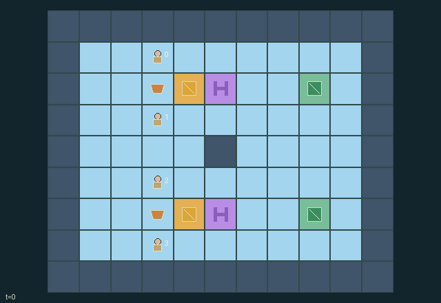

GI110 · Tugboat Convoy: Two Channels, One Hydraulic Selector

Deliver barge 0 to (8,2) and barge 1 to (8,6). Each new delivery pays every tug +1; every sanitized non-wait action costs that tug 1/64. No reward is attached to cooperation labels.
Identity and original contract
4 independently actionable roles; 12 discrete commands per role; 142 native observation columns per role; original horizon 64 steps. Declared per-step reward range: -1 to 2. Observation regime: fully_observable.
Source SHA-256: fbc6da3df61915cf82a7b5d395befa7b60e480b958266083e6df10ed664a0c60
The objective, rewards, population, map and horizon remain original. A preview is not a success claim.
Objective and gameplay
Deliver barge 0 to (8,2) and barge 1 to (8,6). Each new delivery pays every tug +1; every sanitized non-wait action costs that tug 1/64. No reward is attached to cooperation labels.
Opposite perpendicular anchor positions and compatible force votes move whole physical convoys; other boats, cargo, terrain, adverse current and a shared gate selector can prevent movement.
- Four tugs can attach only from an adjacent square; attached tugs travel with their barge.
- A tow needs opposite anchors perpendicular to movement, a net force of at least two and clear footprints.
- A current opposing a horizontal gate crossing raises required net force to three. North and south currents reverse every eight steps.
- A crank opens its channel for four timer units and closes the other. Multiple cranks use rotating tug priority.
- Tugs fit through closed sluices; a barge entering x=5 needs its selected gate timer positive after countdown.
- New cargo delivery pays every tug +1. Each non-wait legal action costs its actor 1/64.
- Delivered barges remain physical obstacles. Both deliveries terminate; step 64 truncates otherwise.
Ending: Both distinct barges are at their own docks; otherwise the game truncates at 64 steps.
What this game explores
Joint transport & shared access: Positions, load geometry, occupancy and persistent access constrain whose action can succeed next. Distinguish physical handoff, shared controls and simultaneous force from a cosmetic cooperation label.
These are questions supported by rule structure, not observed learning effects.
Play it: operating walkthrough
crucibles play --game gi110Keep Python running and open its printed address. Select this game, set a seed and press Create session. The game itself is always English.
Assign a role range to Host with Assign / take over, or Assign all roles. Invite a second participant with Create player invitation, then assign a disjoint subset. Every original role is available.
For every owned role choose a legal command and press Queue. Arrow keys / WASD queue a declared directional action for the current role camera when available. Space or Advance one joint step advances everyone together. Non-directional games use the selectors.
Unqueued roles use the labelled untrained uniform-legal policy. Take over or release roles before the next step without resetting. Full-state debug is privileged and permanently logged; role cameras preserve permissions. Close the session to retain logs. Server restart does not restore sessions.
Complete command reference
IDs and English labels exactly match the manifest. Availability depends on role, resources, location and phase. An available action can still have no productive effect.
0·wait
1·swim north when detached
2·swim east when detached
3·swim south when detached
4·swim west when detached
5·attach to lowest-index adjacent undelivered barge
6·detach
7·tow north
8·tow east
9·tow south
10·tow west
11·crank nearest adjacent channel selector
Roles and capability identifiers
These original role names describe capabilities, not interchangeable skins. Check each owned role's legal selector before planning handoffs.
agent_0·tug 0: shared delivery reward, own fuel cost
agent_1·tug 1: shared delivery reward, own fuel cost
agent_2·tug 2: shared delivery reward, own fuel cost
agent_3·tug 3: shared delivery reward, own fuel cost
Information and observation permissions
All physical state used by decisions is public. Fixed selectors and docks are public map landmarks; ID and current clocks are explicit. No private field or renderer-only strategic information.
The GIF is full-state debug and may reveal hidden entities or private state. Train on obs[agent], not the picture, state tree or another role's private row. Field slices and visibility are in the original manifest.
Reinforcement-learning integration
import jax
from crucibles_jaxmarl import make
env = make("gi110")
key = jax.random.PRNGKey(0)
key, rk, ak, sk = jax.random.split(key, 4)
obs, state = jax.jit(env.reset)(rk)
actions = env.sample_actions(ak, state)
obs, state, rewards, dones, info = jax.jit(env.step_env)(sk, state, actions)
done = dones["__all__"]Observations are float32 vectors of width 142; actions are scalar int32; masks have 12 entries. Supply all 4 roles each transition. Masked sampling is an engineering reference, not a trained learner.
step_env retains terminal data without reset. step performs outer autoreset and keeps terminal data in info["raw_state"] and info["raw_observation"]. Use dones["__all__"] for episode boundaries; separate completion, failure and time limit in analysis.
JIT or vmap equal identities and shapes. Split independent reset, policy and transition keys. Group different shapes explicitly; do not shrink the population or horizon. Host rendering stays outside training.
Training questions and fair evaluation
Define valid completion from the objective before fitting. Preserve original rewards and also report real deliveries/services, losses, resource state, unresolved episodes and per-role returns. Animation is not a reward signal.
Positions, load geometry, occupancy and persistent access constrain whose action can succeed next. Distinguish physical handoff, shared controls and simultaneous force from a cosmetic cooperation label.
Compare memory, communication or centralized critics under matched actor information. Declare critic access; keep actor inputs role-filtered. Match partner/opponent distributions, masks, compute and checkpoint selection. Final tests never enter fitting or selection.
Independent training runs or source-pairing blocks are inferential units; episodes from one policy are not independent training replications. Save hashes, keys, versions, device, time and cost. Negative, zero, failed and indeterminate outcomes are valid. No trained checkpoint or target score is supplied.
Classification and evidence
Overlapping editorial labels are reading aids, not proof of novelty, difficulty, strategic equivalence or learning effects.
- Joint transport & shared access
- Evidence
manifest.task.objective: Deliver barge 0 to (8,2) and barge 1 to (8,6). Each new delivery pays every tug +1; every sanitized non-wait action costs that tug 1/64. No reward is attached to cooperation labels.
- Evidence
manifest.actions.5: attach to lowest-index adjacent undelivered barge
- Evidence
scene.rules.0: Four tugs can attach only from an adjacent square; attached tugs travel with their barge.
Source, receipts and preview limits
The world-only English GIF replays saved untrained legal actions through the original kernel. At most 25 actual endpoints include initial and terminal state; no invented interpolation. It is full-state debug, not the role observation.
Original source, observation slices, manifest and mechanism
Native receipt · Presentation receipt
Engineering passes do not establish learning. Nonzero floating differences remain recorded and undetermined; no new tolerance was introduced. Human scores remain unverified.